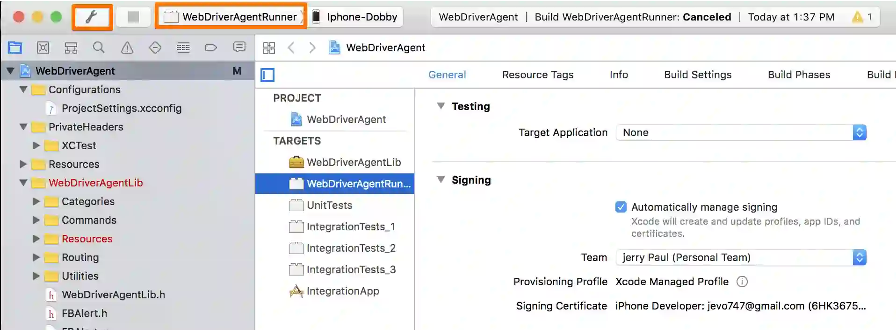
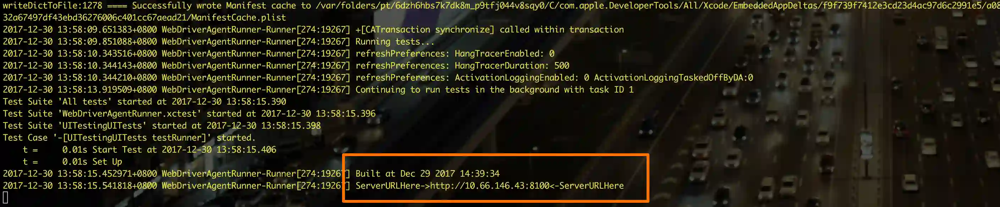
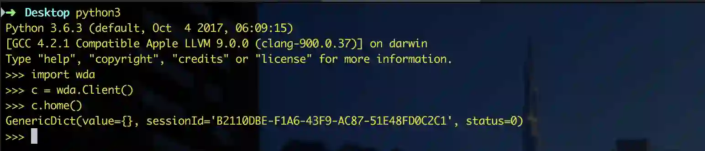
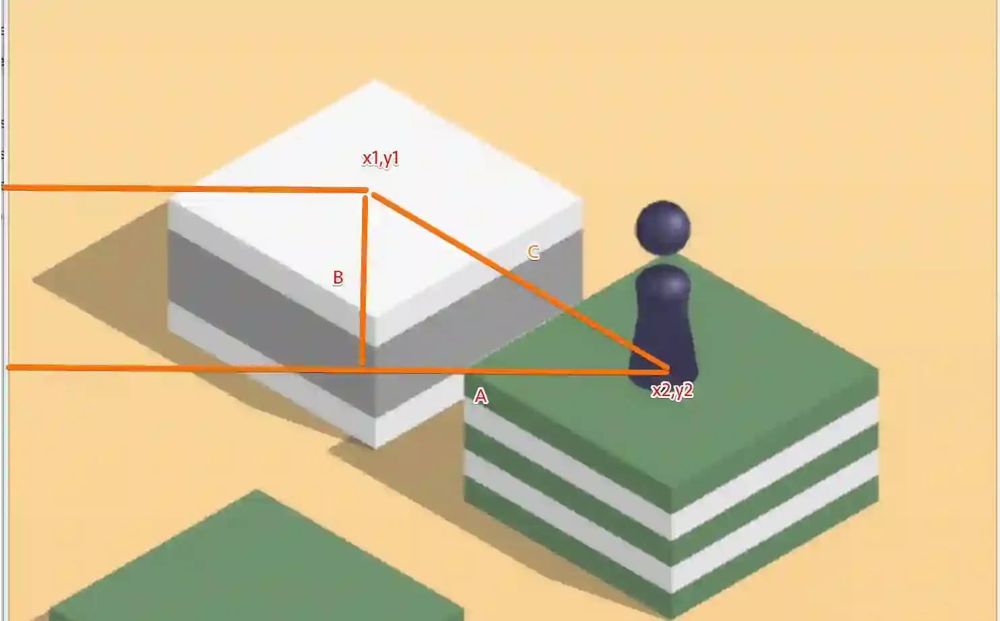
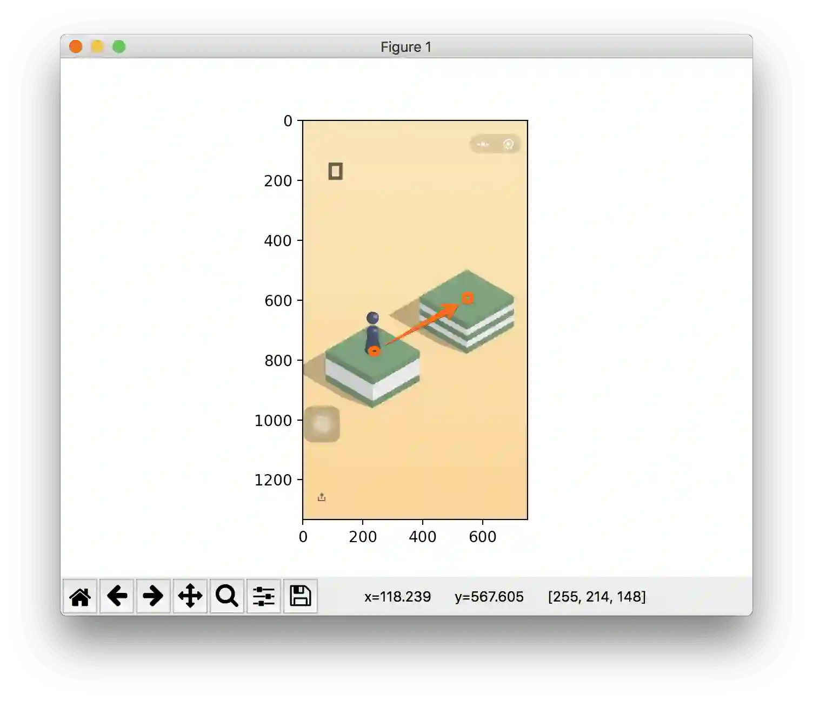

… 等我写完这个脚本,刷到了372分, 才发现Android的大佬们早就有一套操作了, 似乎想法都差不多,我的环境是在ios-mac上执行
安装环境
WebDriverAgent
https://github.com/facebook/WebDriverAgent
facebook开源的自动化驱动框架, 调的私有Api,所以执行的速度应该说是最准的,这也是这套玩法的关键点
需要一些环境依赖,代码clone下来之后, 得在项目路径下执行下:
./Scripts/bootstrap.sh
xcode打开,选择Target是WebDriverAgentRunner,Test到手机(签名用个人Appid就可以,然后Test到手机后,信任一下证书)

facebook-wda
https://github.com/openatx/facebook-wda
wda,一个python脚本,配合WebDriverAgent使用,便捷的安装方法:
sudo pip install --pre facebook-wda
测试下环境
用个终端端口转发下(iproxy 可以通过 brew install usbmuxd安装):
iproxy 8100 8100
用以下命令启动下WebDriverAgent,你需要改下下方的name=你自己的手机名:
xcodebuild -project WebDriverAgent.xcodeproj -scheme WebDriverAgentRunner -destination 'platform=iOS,name=YourDeviceName' test
看到输出这个就启动正常了:

另开个终端,启动下python,如下测试下:

脚本实现:
IMAGE_PLACE = '/tmp/screen.webp'
each_pixel_d = 0.00190
c = wda.Client()
s = c.session('com.tencent.xin')
input("请自行切换到游戏里面的界面,回车即可开始")
def change_to_duration(position_list):
"""
勾股定理 求d=C=开根号(A^2+B^2)
"""
if not position_list:
return
x1,y1 = position_list[0]
x2,y2 = position_list[1]
the_d = math.sqrt(math.pow(y2 - y1, 2) + math.pow(x2 - x1, 2))
return float('%.3f' % (the_d * each_pixel_d))
if __name__ == '__main__':
while 1:
x = c.screenshot(IMAGE_PLACE)
if not os.path.exists(IMAGE_PLACE):
continue
# time.sleep(1) #图片就算在了,渲染还没结束,这1秒阻塞就给了吧,或者不给,为渲染正常的以下方阴影为准
pl.imshow(pl.array(Image.open(IMAGE_PLACE)))
position_list = pl.ginput(2,timeout=2147483647)
pl.ion()
duration = change_to_duration(position_list)
pl.ioff()
if duration and os.path.exists(IMAGE_PLACE):
s.tap_hold(200, 200, duration=duration)
os.remove(IMAGE_PLACE)
首先进入到游戏页面,截图到本地
使用plt.imshow展示这张图片, 通过plt.ginput我们点击的两个点会被记录下来,
我们通过分析这两个点, 得到小人到对面物体的地点:
嗯, 勾股定理:

change_to_duration中先勾股计算的距离d, 然后乘以每个像素点的对应的秒, each_pixel_d = 0.00190是我目前计算到的.应该算还挺准.最后这个方法返回的是按键时间.
而最终操作的方法:
s.tap_hold(200, 200, duration=duration) durantion就是change_to_duration计算出的按键时间.
直接使用
启动后只需要做三步, 点击小人的底部,点击前方物体的中心,然后关闭图, 嗯就可以了, 耐心点,还是可以在朋友圈装一下下的.
